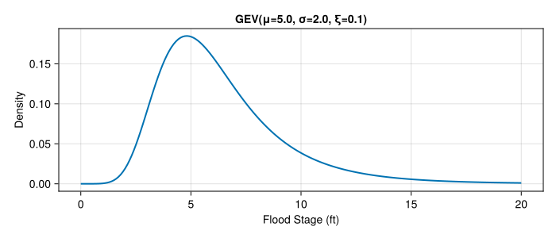
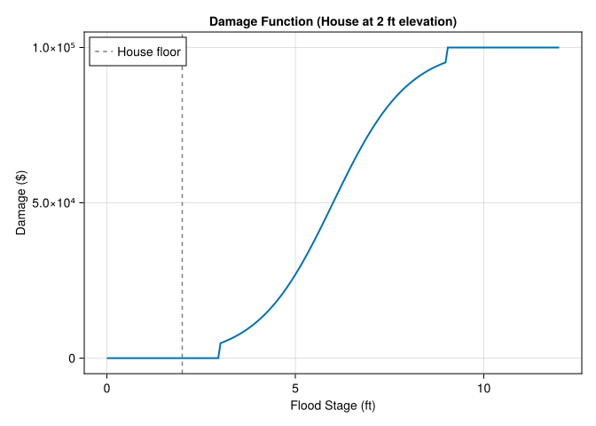
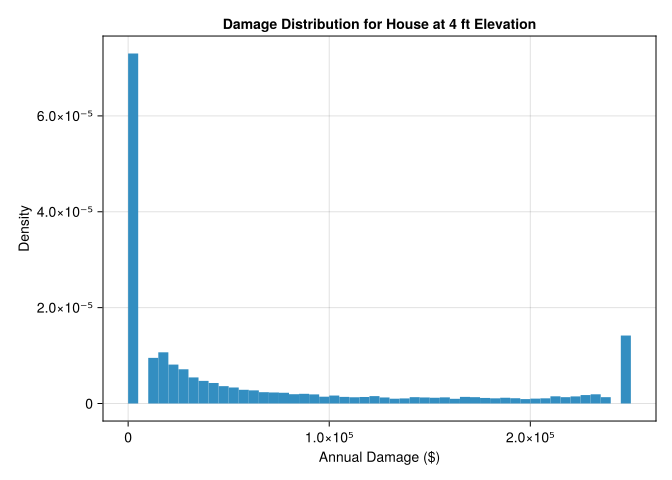

using Pkg
try
# Activate the local project
Pkg.activate(@__DIR__)
# Check if Manifest exists, if not instantiate
if !isfile(joinpath(@__DIR__, "Manifest.toml"))
Pkg.instantiate()
else
# Try to resolve any inconsistencies
Pkg.resolve()
end
catch e
@warn "Package environment setup failed, attempting recovery" exception=e
Pkg.activate(@__DIR__)
Pkg.instantiate()
endLab 2: Hazard-Damage Convolution
CEVE 421/521
1 Overview
In lecture, we learned that risk emerges from the interaction of hazard, exposure, and vulnerability. Today, we’ll implement the mathematical machinery that connects them: convolution.
Convolution is how we transform a distribution of hazards into a distribution of damages. This is the core computational technique behind flood risk scores, insurance pricing, and cost-benefit analysis.
Learning Objectives:
- Understand convolution as the bridge between hazard and damage distributions
- Implement convolution both analytically (simple case) and via Monte Carlo
- Work with the GEV distribution for extreme events
- Apply a depth-damage function to compute flood losses
- Extend analysis to a community of 100 houses
- Get introduced to the SimOptDecisions.jl framework
2 Before Lab
Complete these steps before coming to lab. Read through the entire notebook so you understand what we’ll be doing.
2.1 Setup
Julia uses packages to make code reusable and modular. Run this block to install all required packages – the first time may be slow while everything is installed and compiled.
Now load the packages we’ll use:
using CairoMakie
using Distributions
using Random
using Statistics
Random.seed!(2026)- 1
- For creating figures
- 2
- For probability distributions (GEV, Uniform, etc.)
- 3
- For reproducible random numbers
- 4
-
For
mean()and other statistics - 5
- Set seed so everyone gets the same results
2.2 Convolution by Hand
Before we use computers, let’s understand convolution with a simple example you can do with pencil and paper.
2.2.1 A Simple Flood Risk Problem
Imagine a house worth $100,000 that faces flood risk. Based on historical data, we know:
| Event | Probability | Damage |
|---|---|---|
| No flood | 87% | $0 |
| Minor flood | 10% | $10,000 |
| Moderate flood | 2% | $50,000 |
| Major flood | 1% | $90,000 |
2.2.2 Computing Expected Damage
The expected annual damage (EAD) is the probability-weighted average of all possible damages:
\[\text{EAD} = \sum_{i} p_i \times D_i\]
Let’s verify with code:
probabilities = [0.87, 0.10, 0.02, 0.01]
damages = [0, 10_000, 50_000, 90_000]
expected_damage = sum(probabilities .* damages)
println("Expected Annual Damage: \$$(expected_damage)")- 1
- Probabilities must sum to 1.0
- 2
- Damages in dollars for each scenario
- 3
-
The
.*does element-wise multiplication;sum()adds them up
Expected Annual Damage: $2900.0This is convolution: we’ve transformed a hazard distribution (flood probabilities) into a damage distribution and computed its expected value.
3 During Lab
Work through these sections during the lab session.
3.1 Monte Carlo Convolution
With continuous distributions and nonlinear damage functions, analytical convolution becomes intractable. Monte Carlo simulation offers a flexible alternative.
3.1.1 The GEV Distribution
The Generalized Extreme Value (GEV) distribution models annual maximum flood stages. It has three parameters:
- μ (location): roughly the “typical” annual maximum
- σ (scale): how spread out the distribution is
- ξ (shape): tail behavior; ξ > 0 means fat tails (more extreme events)
μ = 5.0
σ = 2.0
ξ = 0.1
surge_dist = GeneralizedExtremeValue(μ, σ, ξ)- 1
- Location parameter (ft) – shifts the distribution left/right
- 2
- Scale parameter (ft) – must be positive
- 3
- Shape parameter – positive means heavy right tail
- 4
- Create a GEV distribution object from the Distributions.jl package
Let’s visualize this distribution:
let
x_range = range(0, 15; length=200)
fig = Figure()
ax = Axis(
fig[1, 1];
xlabel="Flood Stage (ft)",
ylabel="Density",
title="Annual Maximum Flood Stage Distribution"
)
lines!(ax, x_range, pdf.(surge_dist, x_range); linewidth=2)
fig
end- 1
- Create 200 evenly-spaced points from 0 to 15
- 2
-
pdf.()broadcasts the probability density function over all x values

3.1.2 Exploring the GEV Parameters
Try changing the GEV parameters below to build intuition. Watch how the distribution shape changes.
let
x_range = range(0, 20; length=200)
fig = Figure(size=(700, 300))
# Try changing these values!
μ_test = 5.0 # Try: 3.0, 5.0, 7.0
σ_test = 2.0 # Try: 1.0, 2.0, 4.0
ξ_test = 0.1 # Try: -0.1, 0.0, 0.1, 0.3
test_dist = GeneralizedExtremeValue(μ_test, σ_test, ξ_test)
ax = Axis(
fig[1, 1];
xlabel="Flood Stage (ft)",
ylabel="Density",
title="GEV(μ=$μ_test, σ=$σ_test, ξ=$ξ_test)"
)
lines!(ax, x_range, pdf.(test_dist, x_range); linewidth=2)
fig
end
3.1.3 Monte Carlo Sampling
We’ll draw 10,000 samples from the GEV distribution. Each sample represents one possible year’s annual maximum flood.
n_samples = 10_000
hazard_samples = rand(surge_dist, n_samples)- 1
-
rand(distribution, n)draws n random samples from the distribution
We plot the samples as a normalized histogram (probability density) so we can compare it to the true PDF. The area under the histogram equals 1.
let
fig = Figure()
ax = Axis(
fig[1, 1];
xlabel="Flood Stage (ft)",
ylabel="Density",
title="10,000 Sampled Annual Maximum Flood Stages"
)
hist!(ax, hazard_samples; bins=50, normalization=:pdf)
lines!(ax, range(0, 15; length=200), pdf.(surge_dist, range(0, 15; length=200));
color=:red, linewidth=2, label="True PDF")
axislegend(ax; position=:rt)
fig
end- 1
-
normalization=:pdfscales the histogram so the total area equals 1 - 2
- Overlay the true PDF to show our samples match the distribution

3.1.4 A Depth-Damage Function
Now we need a function that converts flood depth to damage. We’ll use a logistic (S-shaped) curve: damage starts slowly, increases rapidly in the middle range, then saturates.
"""Logistic damage function. Returns damage in dollars."""
function logistic_damage(
flood_stage::T, house_elevation::T, house_value::T;
threshold::T=one(T), saturation::T=T(7)
) where {T<:AbstractFloat}
depth = max(zero(T), flood_stage - house_elevation)
depth <= threshold && return zero(T)
depth >= saturation && return house_value
midpoint = (threshold + saturation) / 2
steepness = T(6) / (saturation - threshold)
damage_fraction = one(T) / (one(T) + exp(-steepness * (depth - midpoint)))
return damage_fraction * house_value
end- 1
- Type parameter ensures all inputs have consistent floating-point type
- 2
- Flood depth = water level minus floor elevation (can’t be negative)
- 3
- No damage below 1 ft of water inside the house (furniture above floor, etc.)
- 4
- Total loss at 7 ft of water
- 5
- Logistic curve centered at midpoint between threshold and saturation
- 6
- Standard logistic function formula
Let’s visualize this damage function:
let
house_elev = 2.0
house_val = 100_000.0
flood_stages = range(0, 12; length=200)
damages = [logistic_damage(s, house_elev, house_val) for s in flood_stages]
fig = Figure()
ax = Axis(
fig[1, 1];
xlabel="Flood Stage (ft)",
ylabel="Damage (\$)",
title="Damage Function (House at 2 ft elevation)"
)
lines!(ax, flood_stages, damages; linewidth=2)
vlines!(ax, [house_elev]; color=:gray, linestyle=:dash, label="House floor")
axislegend(ax; position=:lt)
fig
end- 1
- List comprehension: apply the function to each flood stage
- 2
- Vertical line showing where the house floor is

3.1.5 Convolution via Monte Carlo
Now we convolve the hazard samples through the damage function. This transforms our distribution of flood stages into a distribution of damages.
house_elevation = 2.0 # feet
house_value = 100_000.0 # dollars
damage_samples = [logistic_damage(h, house_elevation, house_value) for h in hazard_samples]- 1
- Apply the damage function to each of the 10,000 flood stage samples
Again, we plot as a normalized histogram (probability density). Notice the spike at $0 (years with no damage) and the long right tail.
let
fig = Figure()
ax = Axis(
fig[1, 1];
xlabel="Annual Damage (\$)",
ylabel="Density",
title="Distribution of Annual Damages"
)
hist!(ax, damage_samples; bins=50, normalization=:pdf)
fig
end
3.1.6 Risk Statistics
ead_mc = mean(damage_samples)
prob_any_damage = mean(damage_samples .> 0)
prob_severe = mean(damage_samples .> 50_000)
println("Expected Annual Damage (Monte Carlo): \$$(round(ead_mc; digits=2))")
println("Probability of any damage: $(round(prob_any_damage * 100; digits=1))%")
println("Probability of damage > \$50k: $(round(prob_severe * 100; digits=1))%")- 1
- Mean of samples estimates the expected value
- 2
- Fraction of samples with positive damage
- 3
- Fraction of samples exceeding $50,000
Expected Annual Damage (Monte Carlo): $48917.84
Probability of any damage: 94.1%
Probability of damage > $50k: 45.9%3.2 Structuring Analysis with SimOptDecisions
Now let’s use the SimOptDecisions.jl framework to structure our analysis. This framework helps organize risk analysis by clearly separating:
- Config: Fixed parameters (house value, house elevation)
- Scenario: One state of the world (one flood event)
include("house_elevation.jl")- 1
- Load type definitions from a separate file
The house_elevation.jl file defines:
HouseConfig: holds house value and base elevationFloodScenario: represents ONE flood event (one water level)depth_damage(): logistic depth-damage functioncompute_damage(): computes dollar damage for a house given a flood scenario
Key insight: A FloodScenario represents a single state of the world – one sampled water level. It is NOT a probability distribution. We create many scenarios by sampling from the hazard distribution.
3.2.1 Visualizing the Depth-Damage Function
let
depths = range(-2, 12; length=200)
damages = [depth_damage(Float64(d)) for d in depths]
fig = Figure()
ax = Axis(
fig[1, 1];
xlabel="Flood Depth Above First Floor (ft)",
ylabel="Damage Ratio",
title="Depth-Damage Function"
)
lines!(ax, depths, damages; linewidth=2)
vlines!(ax, [0]; color=:gray, linestyle=:dash, label="Floor level")
fig
end
3.2.2 Single House Analysis
Let’s analyze a house at 4 ft elevation:
my_house = HouseConfig(house_value=250_000.0, base_elevation=4.0)- 1
- Create a configuration object with keyword arguments
Now we create a FloodScenario for each sampled water level and compute damage:
scenarios = [FloodScenario(h) for h in hazard_samples]
house_damages = [compute_damage(my_house, s) for s in scenarios]- 1
-
Wrap each water level sample in a
FloodScenarioobject - 2
- Compute damage for each scenario using our house configuration
let
fig = Figure()
ax = Axis(
fig[1, 1];
xlabel="Annual Damage (\$)",
ylabel="Density",
title="Damage Distribution for House at 4 ft Elevation"
)
hist!(ax, house_damages; bins=50, normalization=:pdf)
fig
end
ead_house = mean(house_damages)
prob_damage_house = mean(house_damages .> 0)
prob_severe_house = mean(house_damages .> 50_000)
println("Expected Annual Damage: \$$(round(ead_house; digits=2))")
println("Probability of any damage: $(round(prob_damage_house * 100; digits=1))%")
println("Probability of damage > \$50k: $(round(prob_severe_house * 100; digits=1))%")Expected Annual Damage: $63915.29
Probability of any damage: 63.5%
Probability of damage > $50k: 36.7%3.3 Community Risk Analysis
Now let’s extend our analysis to a community of 100 houses at different elevations. This represents a “city on a wedge” where houses closer to the water are at lower elevations.
3.3.1 Setting Up the Community
n_houses = 100
house_elevations = rand(Uniform(3.0, 12.0), n_houses)
house_value_community = 250_000.0
houses = [HouseConfig(house_value=house_value_community, base_elevation=e) for e in house_elevations]- 1
- Random elevations between 3 and 12 feet
- 2
- All houses have the same value for simplicity
- 3
- Create a vector of HouseConfig objects
3.3.2 Computing EAD for Each House
Key insight: All houses experience the same storm (same hazard samples). The only difference is their elevation.
expected_damages = zeros(n_houses)
for i in 1:n_houses
damages_i = [compute_damage(houses[i], s) for s in scenarios]
expected_damages[i] = mean(damages_i)
end- 1
- Pre-allocate a vector to store results
- 2
- Loop over each house
- 3
- Compute damage for all 10,000 scenarios
- 4
- Store the mean (expected) damage
let
fig = Figure()
ax = Axis(
fig[1, 1];
xlabel="House Elevation (ft)",
ylabel="Expected Annual Damage (\$)",
title="EAD vs. Elevation for 100 Houses"
)
scatter!(ax, house_elevations, expected_damages; markersize=8)
fig
end
3.3.3 Community-Level Damage Distribution
To understand total community risk, we compute total damage for each Monte Carlo sample:
total_damages = zeros(n_samples)
for j in 1:n_samples
scenario_j = scenarios[j]
total_damages[j] = sum(compute_damage(houses[i], scenario_j) for i in 1:n_houses)
end- 1
- One total damage value per scenario (possible year)
- 2
- Loop over scenarios (not houses!)
- 3
- Sum damage across all 100 houses for this scenario
let
fig = Figure()
ax = Axis(
fig[1, 1];
xlabel="Total Community Damage (\$)",
ylabel="Density",
title="Distribution of Annual Community Damages"
)
hist!(ax, total_damages; bins=50, normalization=:pdf)
fig
end
total_ead = mean(total_damages)
println("Total Community EAD: \$$(round(total_ead / 1e6; digits=3)) million")
println("Sum of individual EADs: \$$(round(sum(expected_damages) / 1e6; digits=3)) million")Total Community EAD: $2.841 million
Sum of individual EADs: $2.841 million3.4 The SimOptDecisions Framework
The SimOptDecisions.jl package provides a structured way to think about decisions under uncertainty. Here’s the key vocabulary:
| Term | What it means | In this lab |
|---|---|---|
| Config | Fixed parameters that don’t change | House value, base elevation |
| Scenario | One state of the world | One flood water level |
| State | Evolving conditions over time | (Not used today) |
| Action | A decision | (Not used today) |
| Policy | A decision rule | (Not used today) |
Today we focused on risk analysis: understanding the distribution of damages given uncertainty in hazards.
In future labs, we’ll use SimOptDecisions to:
- Add State to track conditions that change over time (like sea level rise)
- Add Actions and Policies to represent decisions (like how high to elevate)
- Compare different policies across many scenarios
3.5 Reflection Questions
Answer these questions in a few sentences each:
3.6 Summary
In this lab, you learned to:
- Convolve hazard distributions through damage functions analytically and via Monte Carlo
- Work with the GEV distribution for extreme event modeling
- Apply depth-damage functions to translate hazard into losses
- Analyze community-level risk with 100 houses at varying elevations
- Structure risk analysis using SimOptDecisions.jl (Config + Scenario)
The key insight: convolution is the mathematical bridge between “how bad could the flood be?” and “how much will it cost?”
3.7 Submission
- Push your completed notebook to GitHub
- If the formatter creates a pull request, approve it and re-render
- Submit the link to your repository on Canvas
Checklist
Before submitting, make sure you have completed these tasks. Each task involves modifying existing code, not writing from scratch.